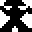
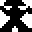 


 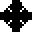
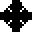 


 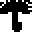
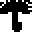 


clx-cursor is made for antialiasing cursor rendering for CLX.
clx-cursor was started from removing <<xsetroot -cursor_name>> command execution from .stumwpmrc.
clx-cursor is maintained in Git:
git clone git://github.com/filonenko-mikhail/clx-cursor
will get you a local copy.
http://github.com/filonenko-mikhail/clx-cursor/
is the GitHub project page, where the issue tracker is located.
clx-cursor is library for loading cursor glyphs (or in other words pixmaps, icons)
The following table contains standard pixmaps for cursors. Antialiased pixmaps from desktop themes have slightly similar, but more glamour shapes.
| image | keyword | image | keyword
|
| | :X-cursor |
| :ll-angle
|
| :arrow | :lr-angle
| ||
| :based-arrow-down | 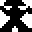 | :man
| |
| | :based-arrow-up | | :middlebutton
|
| | :boat | | :mouse
|
| 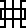 | :bogosity | 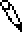 | :pencil
|
| | :bottom-left-corner | | :pirate
|
| | :bottom-right-corner | | :plus
|
| | :bottom-side | | :question-arrow
|
| | :bottom-tee | | :right-ptr
|
| :box-spiral | | :right-side
| |
| | :center-ptr | :right-tee
| |
| | :circle | | :rightbutton
|
| | :clock | :rtl-logo
| |
| :coffee-mug | :sailboat
| ||
| 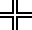 | :cross | | :sb-down-arrow
|
| 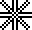 | :cross-reverse | 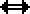 | :sb-h-double-arrow
|
| :crosshair | | :sb-left-arrow
| |
| 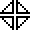 | :diamond-cross | | :sb-right-arrow
|
| :dot | | :sb-up-arrow
| |
| | :dot-box-mask | | :sb-v-double-arrow
|
| | :double-arrow | | :shuttle
|
| | :draft-large | | :sizing
|
| 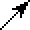 | :draft-small | 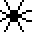 | :spider
|
| | :draped-box | | :spraycan
|
| | :exchange | 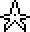 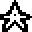 | :star
|
| 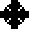 | :fleur | :target
| |
| 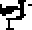 | :gobbler | 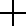 | :tcross
|
| | :gumby | 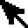 | :top-left-arrow
|
| :hand1 | | :top-left-corner
| |
| | :hand2 | | :top-right-corner
|
| | :heart | | :top-side
|
| | :icon | | :top-tee
|
| | :iron-cross | | :trek
|
| | :left-ptr | | :ul-angle
|
| 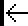 | :left-side | 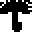 | :umbrella
|
| | :left-tee | | :ur-angle
|
| :leftbutton | | :watch
| |
| | :xterm
|
Open display and set cursor theme for it:
(set-theme *display* "Vanilla-DMZ-LH" 24)
Get cursor object:
(setf cursor (get-cursor *root* :left-prt))
Set it to window:
(setf (xlib:window-cursor *root*) cursor)
All cursor pixmaps can be viewed in window. Just click on name:
(asdf:load-system :clx-cursor-test)
(clx-cursor-test:show-window "Vanilla-DMZ-AA")
Library for loading cursor pixmaps from Xcur files and rendering it with Xrender. Library supports themes.
Class precedence list:
xcursor, structure-object, tStructure contains xcursor information from Xcur file. Images slot is array of xcursor-images.
Class precedence list:
xcursor-image, structure-object, tStructure containg cursor glyph information. Data is 2 dimensional array with
argbpixels. Data can be used in xlib:create-image :data parameter. Delay slot is used for animated cursors (milliseconds).
Reads Xcur file, and returns xcursor object. xcursor object can be used in
add-cursor.
Returns cursor object, which can be used with (xlib:window-cursor). If Xrender and theme icon file is available, tries to load cursor from that file, else load standard xlib cursor glyph. index.theme is not supported.
add-cursor: Dictionarycursor: Dictionaryload-cursor-from-file: Dictionaryset-theme: Dictionarytheme: DictionaryThis manual is maintained in Texinfo, and automatically translated into other forms (e.g. HTML or pdf). If you're reading this manual in one of these non-Texinfo translated forms, that's fine, but if you want to modify this manual, you are strongly advised to seek out a Texinfo version and modify that instead of modifying a translated version.